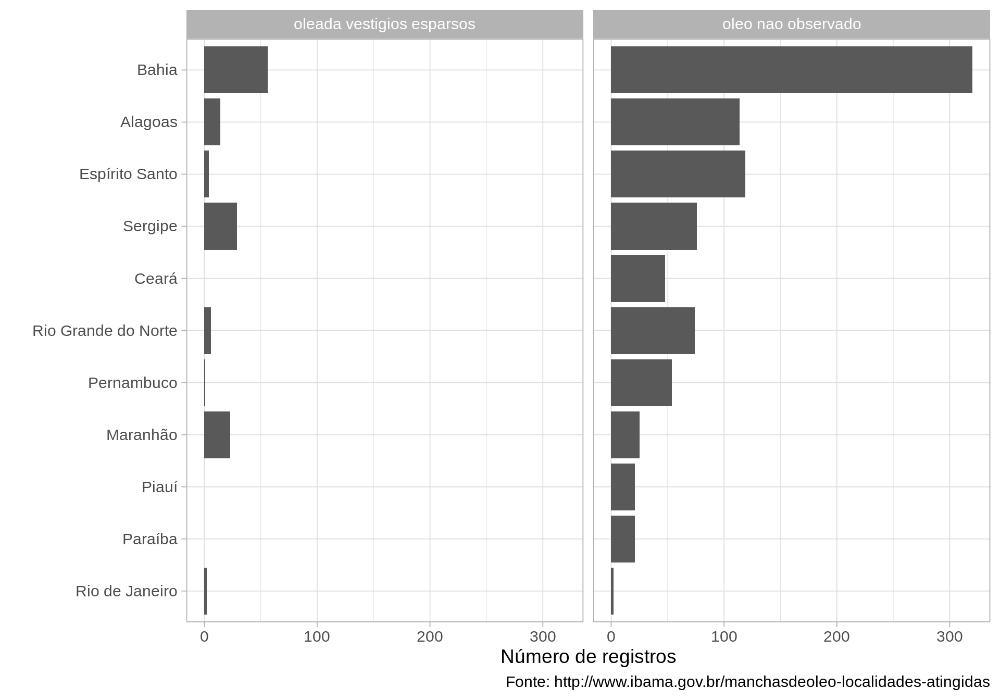

Este relatório dinâmico utiliza os dados do monitoramento da manchas de óleo feito pelo Instituto Brasileiro do Meio e dos Recursos Naturais Renováveis (Ibama). Como informado na página do Ibama, os dados contêm as seguintes informações:
nome de cada localidade em que já houve avistamento de manchas;
município;
data do primeiro avistamento;
estado;
latitude (em graus, minutos e segundos);
longitude (em graus, minutos e segundos);
data em que a localidade foi revisitada;
status do local no momento.
Informações adicionais (por exemplo, intervalo entre visitas) foram geradas por este relatório dinâmico. Os dados originais sobre o derramamento de óleo podem ser coletados aqui: http://www.ibama.gov.br/manchasdeoleo-localidades-atingidas
O código que produz este relatório pode ser encontrado aqui: https://github.com/kguidonimartins/monitora-derramamento-oleo
A única diferença dos dados usados aqui dos dados originais é a transformação das coordenadas geográficas de graus, minutos e segundos para graus decimais. O objetivo aqui é apresentar os dados de uma forma mais integrada.

Dica: Clique nos círculos para ter acesso às informações da localidade.